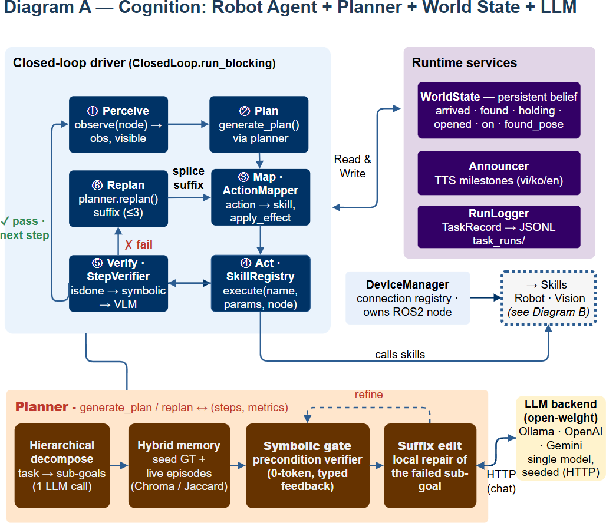

Cognition: planning & verification
This page goes one level deeper than Architecture into the
robot-agnostic half of the stack: the closed-loop driver, the persistent
world state, the layered verifier, and the SAGE planner reached through a
decoupled planner protocol. All of this lives in robot_agent and
pyplanner and knows nothing about a specific robot.
{kind=link}

The cognition stack (export diagram_brain.drawio → images/diag_cognition.png).
The closed loop
ClosedLoop.run_blocking (in robot_agent) executes a plan as a bounded
replanning loop rather than firing a fixed script. Per step:
Perceive —
observe(node)returns a short observation string and the list of currently visible objects; the world belief is reconciled from localization first (see WorldState below).Plan — the planner returns
(steps, metrics)viagenerate_plan.Map —
ActionMapperturns the symbolic step into a concrete(skill_name, params)pair, or marks it a no-op, or raisesUnmappable.Act —
SkillRegistry.execute(name, params, node)runs the skill and returns a result dict{isdone, msg, ...}.Verify —
StepVerifierchecks the result in up to three layers.Update or replan — on success the belief is updated (
apply_effect) and persisted; on failure the planner produces a suffix that is spliced after the completed prefix. Replans are bounded (default 3).
Every milestone is streamed as an event over the agent WebSocket and appended to a per-run JSONL log, so a run is fully replayable.
WorldState — the robot’s belief
WorldState is a small symbolic dataclass the robot carries across runs,
persisted to world_state.json and editable live from the dashboard:
Field |
Kind |
Meaning |
|---|---|---|
|
sensor |
nearest configured location, reconciled from localization |
|
belief |
object most recently located (not yet grasped) |
|
belief |
object currently believed to be grasped (no gripper sensor) |
|
belief |
sets of open containers / switched-on appliances |
|
belief |
epoch seconds the grasp belief was set |
|
geometry |
3D memory of the found object in the base frame at detection time |
found_pose is flagged stale once the base moves > 0.25 m from the
detection spot; it must not be trusted for grasping after that. The belief is
read with GET /agent/world and partially updated with PUT /agent/world
(only the fields sent), which is safe even mid-run.
Mapping symbolic actions to skills
ActionMapper is constructed with a robot-specific name map
(grace_namemap for kcare). It never hard-codes locations, objects or skills:
to_loc/to_objtranslate planner names to the robot’s vocabulary.SKILL_MAPmaps a planner action (e.g.MoveTo,Pick,Open) to a kcare skill (move,pick,open_drawer…).SUPPORTED_ACTIONS/NOOP_ACTIONS/VLM_ACTIONSdeclare what this robot can execute, what to skip silently, and what gets a vision check.apply_effectmirrors the symbolic effects ontoWorldStateafter a verified step (e.g.Pickmovesfound→holding).
An action with no executable skill on this robot raises Unmappable and is
reported, rather than failing silently.
Layered verification
StepVerifier checks each executed step cheapest-first and stops at the first
failure:
isdone— did the skill itself report success? (0 tokens)symbolic— do the step’s preconditions/effects hold against a copy of the world? (0 tokens; never mutates the real belief)VLM— optional vision-language check for actions inVLM_ACTIONS(Pick, Place, PutIn, Open, Close). Wrapped in a never-fail guard so a broken perception check is recorded but cannot stall the loop.
The verdict is OK only if every layer that ran passed; the first failing layer’s reason drives the replan.
SAGE planner via the Planner Protocol
Planning is decoupled behind a small Planner protocol. get_planner
selects a backend by name:
grace→GraceBackend, which wrapspyplanner’s SAGE planner.llm_direct→ a legacy single-call backend.
SAGE (the system’s algorithmic contribution) combines four lightweight mechanisms over a single open-weight model:
Hierarchical decomposition — task → sub-goals → steps.
Hybrid memory — retrieves few-shot examples from a curated seed set plus successful live episodes (Chroma embeddings, Jaccard fallback).
Symbolic gate — a zero-token precondition verifier that rejects invalid steps and feeds typed feedback back to the model before execution.
Suffix-only repair — on failure it regenerates only the failed sub-goal’s remaining steps, recovering with roughly 2.4–3.3× fewer LLM calls than whole-plan replanning (see the SAGE paper).
Note
📷 Screenshot slot — add images/shot_plan_panel.png (the dashboard’s
Robot State + plan/timeline panel) to show planning live.

The dashboard renders the world belief, the generated plan, and a live step-by-step execution timeline driven by these events.
The LLM backend
The planner talks to a single, seeded open-weight model over HTTP — Ollama
(local, e.g. qwen2.5:7b), OpenAI, or Gemini. Provider and model are set from
POST /agent/llm-config; API keys via POST /agent/api-key. Running
locally with Ollama keeps the whole stack on-premise.
The event stream
Both the closed-loop and the direct paths emit events over /ws/agent:
task_start, plan, step_start, step_done, step_log,
replan, world (a fresh WorldState snapshot), and done / error.
The dashboard subscribes to this stream; the same events are persisted to
task_runs/<run_id>.jsonl.